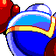

 B.U.D.D.
What is BUDD?
BUDD is a retro sci-fi adventure platformer game I've been working on since 2021! It's loosely inspired by retro SEGA games I loved, like Monster World IV or the Phantasy Star games.
It stars Eris, a rookie bounty hunter that's found herself in the wrong place at the wrong time. She needs to use friendly robots called BUDDs to help her repair her ship, finish jobs for her colony, and then eventually uncover a conspiracy spanning the entire Lumina System.
Check out the Steam page for more info! I'd like to release the game towards the end of 2025, but we'll see.
Check out the Demo!

If you're curious, I released a demo version in 2023! This demo has Verdeo, MARI-XIII's hub, a small part of Mizuli, and two top secret satellite missions found in the post-game!
The current patch, version 2.0, introduces a TON of quality of life additions and improvements. You can check out the patch notes on Itch.
Click here to check out the demo on Itch!-->
The History of BUDD
The development of BUDD spans from 2020 to 2024, at least at the time of writing this. I tried to catalogue the entire history of it up to this point, but it actually ended up being too big for this page alone!
Click here to read a comprehensive history of BUDD, from initial conception to the modern day! -->
The Characters of BUDD

There are a fair amount of characters Eris gets to know over the course of the game. If you're curious, I wrote up some bios for each of them! There are a few spoilery exceptions I had to leave out, though.